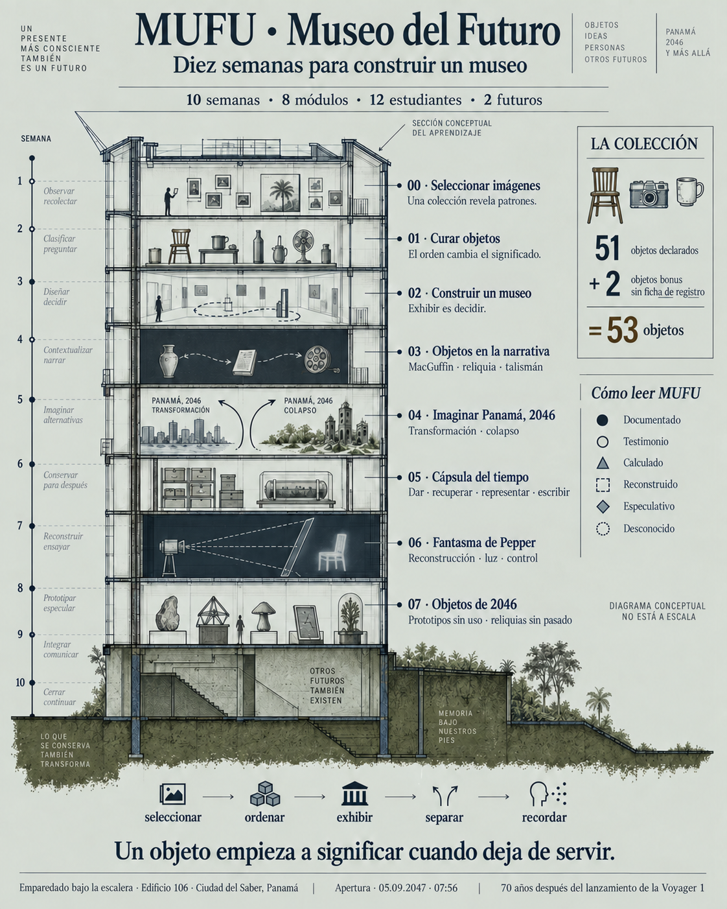
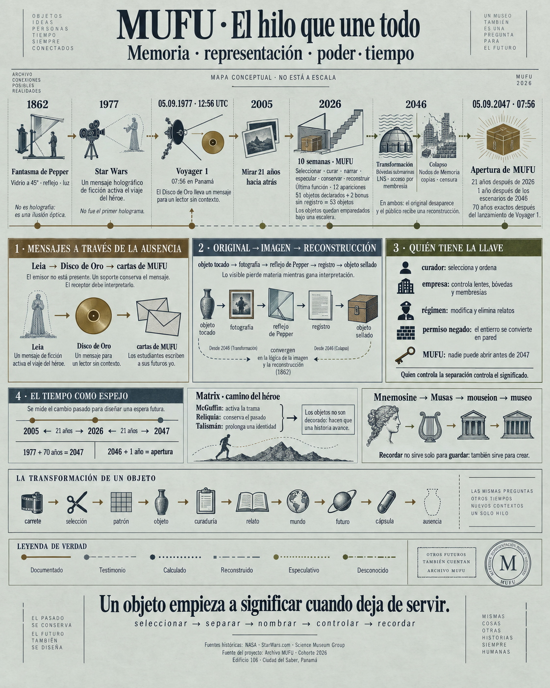

MUFU / 04Infografías visuales
Ver el museo.
De un vistazo.
Dos láminas para mirar, compartir o guardar: el recorrido de diez semanas y el mapa que une memoria, representación, poder y tiempo.
Lámina 01 / el recorrido
Diez semanas
para construir un museo.
Selección, curaduría, relato, futuros, cápsula y aparición. La lámina reúne los ocho módulos, las 12 personas y el conteo actualizado de 53 objetos.
Mapa conceptual. La asignación de semanas es una lectura visual, no un calendario documentado de cada módulo.
{kind=link}


Lámina 02 / el hilo
El hilo que
une todo.
Un mapa de las conexiones entre Pepper, el mensaje de Leia, Voyager, la cápsula, los futuros de 2046 y la cita de 2047.
Mapa conceptual. Para consultar fuentes, precisión temporal y relaciones completas, ir al atlas interactivo.
{kind=link}
MUFU / El trimestre compartido
Un museo hecho entre todos.
El museo fue el tema común de diez semanas. MUFU nace de la sinergia entre las clases, sus docentes y los 12 estudiantes: las decisiones de una experiencia vuelven a aparecer, transformadas, en las demás.
El museo es el centro. Comprender lo aprendido y hacer visibles sus conexiones es el propósito común. Ningún docente es el principal: los aportes de las distintas clases y de los estudiantes se encuentran alrededor de ese tema.
El museo
Tema común · autoría colectiva · diez semanas
Mirar y seleccionar
Erika Schnitter y Alejandro Pachón
La selección de imágenes personales descubre patrones. Esa pregunta por lo que merece conservarse regresa en la curaduría y en la cápsula.
Curar y dar sentido
Román Flórez
Los mismos objetos pueden contar historias distintas. La curaduría conecta las elecciones personales con la narrativa y la experiencia museal.
Construir el museo
Viridiana Zavala
Aquí nació MUFU como un mundo compartido: pilares, relatos, recorridos, roles, pedestales, recursos digitales y sonido. Exhibir es una decisión colectiva.
Narrar, conservar, hacer aparecer
Luis Miguel Caamaño
El puente narrativo, la cápsula y la aparición vuelven materiales las preguntas del trimestre: qué significa un objeto, para quién se guarda y quién decide lo que vemos.
Investigar e imaginar futuros
Karla Paniagua
Las señales del presente, rastreadas hasta sus fuentes, sostienen dos mundos de 2046. Sus reglas de acceso a la memoria conectan el museo con la aparición y los prototipos.
Integrar y construir
Los 12 estudiantes
Los 12 estudiantes participan en todo el recorrido: seleccionan, curan, narran, diseñan mundos y construyen. El trabajo autónomo integra lo aprendido en dos prototipos, uno por futuro.
Los aportes y los nombres se recuperan del relato original. Estos cruces son una lectura pedagógica de sus relaciones, no el programa completo de las asignaturas ni un calendario semanal. Procedencia de esta lectura.
También existe una versión web accesible e imprimible, con las relaciones completas, fuentes y notas de evidencia.